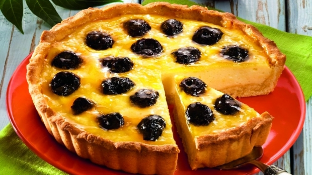

Medii de viaţă-DEŞERTUL - Materiale didactice de 10(zece)
- Deşertul Sahara - masterprof.ro
Referat despre Desertul Gobi In 1989, prabusirea comunismului in fosta Uniune Sovietica a deschis desertul Gobi care a fost inaccesibil pina atunci pentru restul lumii. Secole intregi, izolarea si lipsa cailor de acces au creat in jurul acestuia o aura de mister care persista si in zilele noastre. Desertul Gobi, mai demult denumit si Samo, dupa marime este al doilea din lume dup desertul ... - Curiozităţi despre viaţa în deşert | AniDeȘcoală.ro
Gobi Deşert Dune Nisip. 153 166 10. Canyonlands. 87 157 2. Prăjituri Cupcakes. 341 282 46. Ciocolata Întuneric. 196 247 68. Iaurt Fructe Mure. 177 165 22. Gogoa ... - Ştiaţi că...se poate muri de inundaţii în deşert? Aflaţi ...
Imagini înrudite: sahara nisip desert peisaj deşert 370 Imagini gratuite de Desertul Sahara. 516 500 48. Deşert Maroc. 541 654 47. Deşert Dune. 160 221 25. Desert Nisip. 165 151 14. Deşert Maroc. 197 254 26. Desert Maroc Dune. 123 152 11. - Medii de viaţă-DEŞERTUL - Materiale didactice de 10(zece)
Marele “Deşert alb”, cum a fost denumit, se întinde pe o suprafaţă de peste 700 km şi nu este compus din cuarț ( ca celelalte), ci din praf de cristale şi minerale. Bazinul Tularosa, unde se află neobişnuitul deşert, este de mică adâncime şi înconjurat de numeroşi munţi. - Poze : peisaj, nisip, camp, prerie, deşert, dună, vale ...
Tot din seria lecţiilor despre mediile de viaţă de pe Terra studiate la clasa pregătitoare face parte şi deşertul. Aceasta prezentare surprinde aspecte din deşert: definiţie, exemple, plante şi animale care trăiesc în deşert, oamenii deşertului, curiozităţi . - Unde este singurul deşert din Romania? - Descopera.ro
Sahara (Sahra’ = deşert în lb. arabă) se desfăşoară pe o distanţă de 5 150 km de la V la E, între Oc. Atlantic şi Marea Roşie, şi pe o lăţime ce variază între 1 300 şi 2 250 km. Spre N se întinde până aproape de ţărmul mediteranean la E de meridianul de 10° long. - Desertul - Ce plante traiesc? | Marea Carte: Întrebări şi ...
Deşertul nord-african Sahara este cel mai mare deşert din lume. Acoperă o suprafaţă de aproape 40 de ori mai mare ca suprafaţa României. Relieful său este stâncos, iar o zecime din el este acoperit cu dune de nisip. - Safari în deşertul Arabiei - Emirate vs Qatar - TravelBadgers
Acest deşert uscat se întinde de la ţărmul Oceanului Atlantic până la Marea Roşie alcătuind un trapez cu o lăţime în vest de 4.500 - 5.500 km, iar în nord-sud cu latura de 1500 - 2.000 km. Cea mai mare parte a pustiului este stâncoasă (Hamada) cu pietriş (Serir), pustiul de nisip (Erg) ocupând o suprafaţa mai redusă. - Desert Imagini - Descarcă imagini gratuite - Pixabay
România este una dintre puţinele ţări europene care deţin aproape toate tipurile de ecosistem de pe Bătrânul Continent. Şi oricât de greu ar fi de crezut, ţara noastra are şi un deşert. De mici dimensiuni, dar totuşi un deşert. - Sahara – deşert, plin de enigme
Sahara, cel mai mare deşert în lume? Foarte mulţi ştim că Sahara este cel mai mare deşert de nisip. Dar afirmaţia nu este chiar corectă. Cu o suprafaţă de 8,7 milioane km2, Sahara este, într-adevăr, cel mai mare deşert din lume, deşi se constituie preponderent din pietre şi într-o mică măsură din nisip. Cel mai […]
Home Clasa Pregătitoare Clasa I Clasa a II-a Clasa a III-a Clasa a IV-a About Contact
Home Lb. Română Matematică Științe istorie/geografie Dezv. pers arte vizuale muzică
joi, 13 martie 2014
Home / Animale / Clasa pregătitoare / HOME / Medii de viață / Ppt / STIINTE / Medii de viaţă-DEŞERTULMedii de viaţă-DEŞERTUL
by Loreta Țivlea on 3/13/2014 in Animale , Clasa pregătitoare , HOME , Medii de viață , Ppt , STIINTE Tot din seria lecţiilor despre mediile de viaţă de pe Terra studiate la clasa pregătitoare face parte şi deşertul. Aceasta prezentare surprinde aspecte din deşert: definiţie, exemple, plante şi animale care trăiesc în deşert, oamenii deşertului, curiozităţi .Descărcaţi acest material didactic în format Ppt de aici .
Sper să vă fie de folos!
Cu drag,
Tags # Animale # Clasa pregătitoare
Eu sunt Loreta Țivlea
Aici este clasa mea virtuală. Dacă vrei să-mi urmărești activitatea, te invit să lași grijile la intrare, să iei loc în banca întâi și să fii atent. Succes!
Niciun comentariu:
Trimiteți un comentariu
Postare mai nouă Postare mai veche Pagina de pornire
Postări populare
Structura anului școlar 2017 2018 Structura anului școlar 2017 2018 poate fi descărcată în format PDF de aici . Calendarul școlar a fost realizat conf... Structura anului școlar 2018-2019 Cursurile anului şcolar 2018-2019 încep luni, 10 septembrie și însumează 168 de zile lucrătoare (34 de săptămâni). Str... Patru modele de felicitări pentru 8 Martie Felicitările sunt proiecte foarte apreciate de copilașii clasei mele. Primesc aproape zilnic felicitări, mici bilete ori simple desene de l... Alfabetul limbii române Alfabetul limbii române este un proiect mai vechi la care am lucrat multe ore şi care în acest an şcolar, în sfârşit şi-a găsit utilitatea....Etichete
1 Martie 15 Septembrie 8 Martie Absolvire Alfabet Animale Anotimpuri CD Cifrele romane Colaj Comportament Corpul uman Crăciun Culori Dactilopictură De afişat Dinozauri Diplome Diverse Dragobete ECO Ecusoane Educația Globală Eminescu Erasmus+ Eveniment Felicitări Figuri geometrice Fișe de lucru Flori Fructe şi legume Gramatică Halloween Jocuri Mărțișoare Măști Medii de viață Miniaturi Mişcare Modelaj Moș Nicolae Natură Orare Origami Paști Poezii Poveşti Ppt Produse nontoxice Programe şcolare Proiectare didactică Publicație Rame foto Rebus România Semn de carte Sf Andrei Sistemul solar Școala altfel Tehnică mixtă Timpul Unități de măsură Uniunea Europeană Vacanţă Valentine s Day Ziua Copilului Ziua Educației Ziua Învățătorului Ziua Pământului Ziua Porților DeschiseV-au plăcut și:
Alfabetul limbii române Alfabetul limbii române este un proiect mai vechi la care am lucrat multe ore şi care în acest an şcolar, în sfârşit şi-a găsit utilitatea.... Teste de evaluare inițială C.L.R. și M.E.M. - clasa I Celor care ați lăsat pe ultima sută de metri elaborarea testelor de evaluare inițială pentru clasa I la C.L.R. și M.E.M, vă ofer a... Evaluare iniţială, clasa pregătitoare-M.E.M. Această fişă de evaluare iniţială am elaborat-o şi am aplicat-o elevilor mei de clasă pregătitoare. În măsura în care vă doriţi să ... Orar - clasa I Orarul acesta este destinat elevilor de clasa I, fiind scris și ilustrat pe înțelesul lor. Alături de orar puteți descărca de aici și sc...Sunt și aici
Follow on Twitter Like on FacebookDespre mine
Loreta Țivlea Vizualizați profilul meu completArhivă blog
Arhivă blog mai (1) martie (5) februarie (8) ianuarie (4) decembrie (2) noiembrie (5) octombrie (12) septembrie (5) august (1) iunie (2) mai (7) aprilie (6) martie (15) februarie (8) ianuarie (7) decembrie (7) noiembrie (8) octombrie (17) septembrie (13) august (2) iulie (2) iunie (3) mai (4) aprilie (6) martie (16) februarie (4) ianuarie (5) decembrie (15) noiembrie (12) octombrie (5) septembrie (3) august (1) iunie (1) mai (6) aprilie (2) martie (6) februarie (3) ianuarie (2) decembrie (1) noiembrie (4) octombrie (6) septembrie (3) iunie (4) mai (5) aprilie (7) martie (11) februarie (8) ianuarie (8) decembrie (8) noiembrie (6) octombrie (9) septembrie (11) august (2) iulie (2) iunie (10) mai (10) aprilie (16) martie (11) februarie (12) ianuarie (15) decembrie (19) noiembrie (22) octombrie (18) septembrie (19) august (22) iulie (24) iunie (18) mai (14) aprilie (17) martie (103)Abonați-vă
Follow @didacticus10 Created By SoraTemplates & MyBloggerThemes